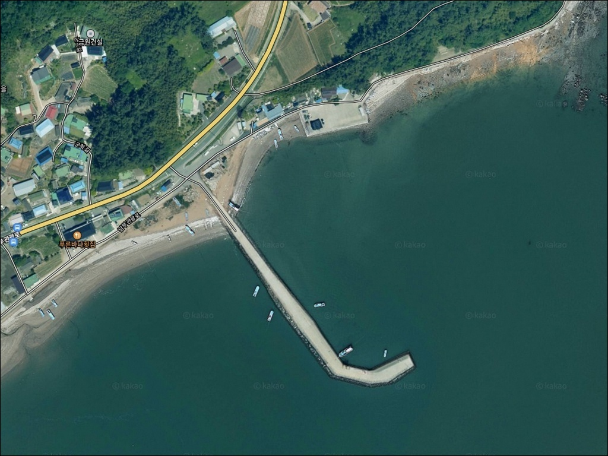
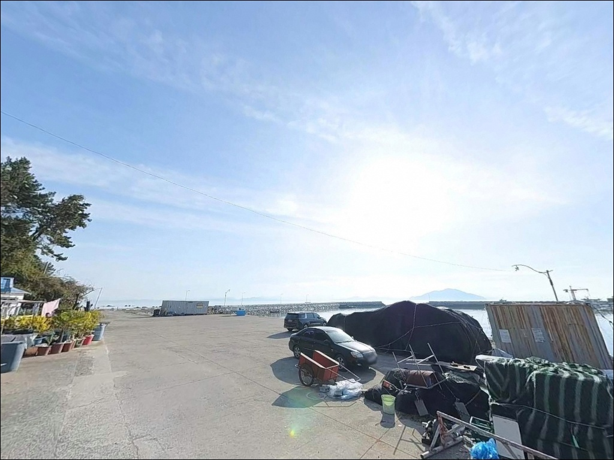
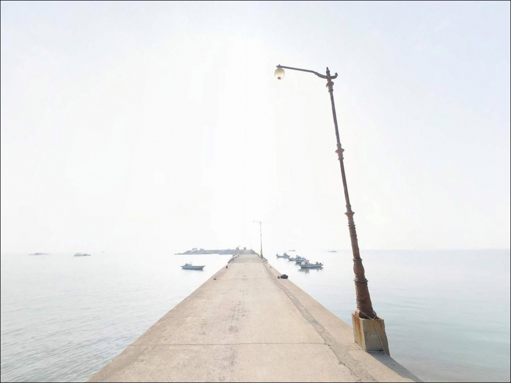
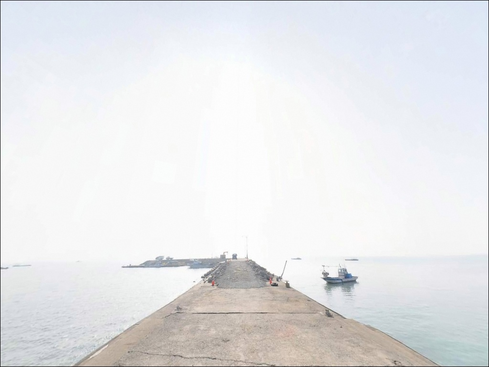
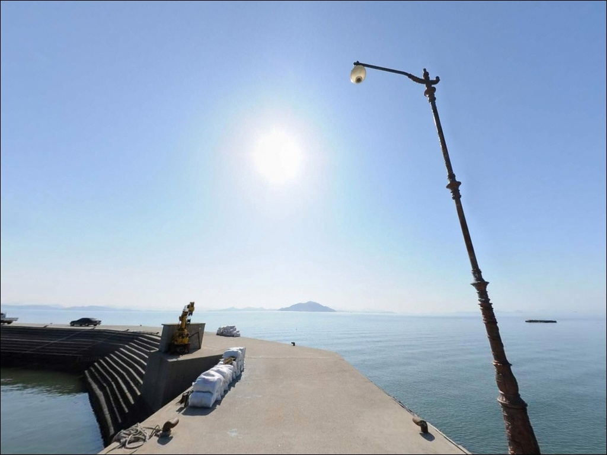
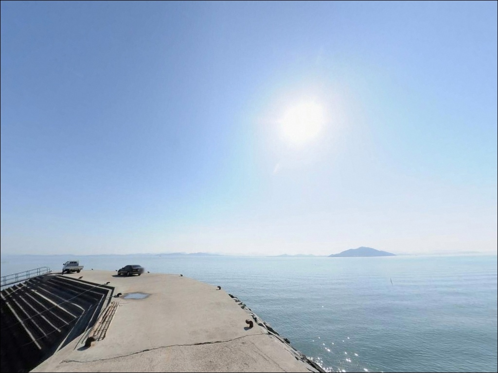
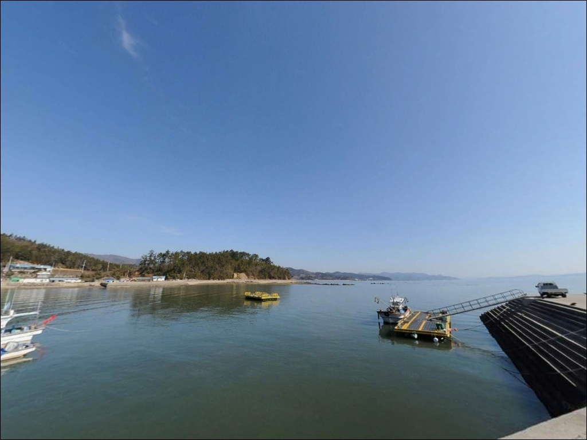
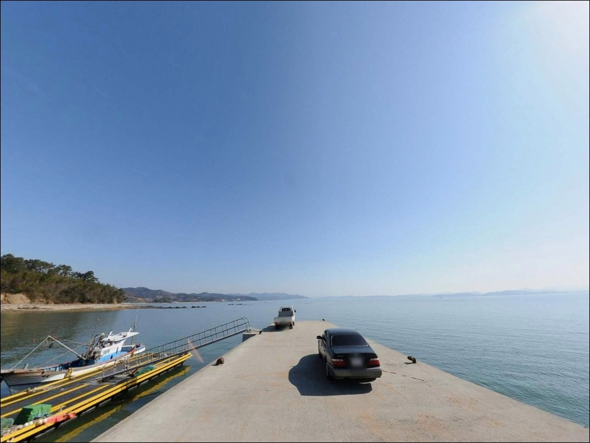
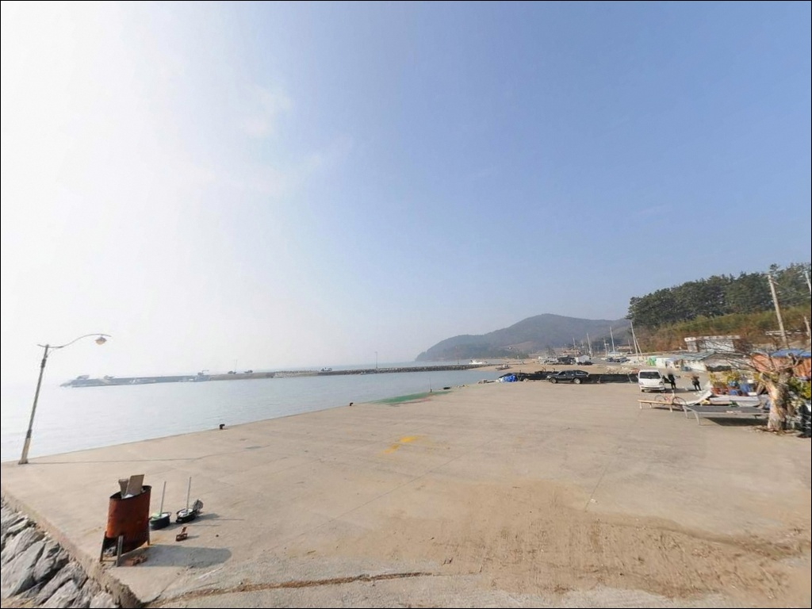

군학항, 전일리방파제, 전남 보성군 방파제 내항의 안전한 바다 차박 낚시 장소
이 페이지에는 광고(제휴 링크 포함)가 있으며, 광고 링크를 통해 구매하면 운영자가 판매 수익 또는 수수료를 받을 수 있습니다. 포인트 사진: 카카오맵 스카이뷰·로드뷰. 이 페이지의 지도·사진 이미지는 카카오맵의 실제 서비스 이미지와 다를 수 있습니다.


포인트 안내
군학항(전일리방파제)
전남 보성군 회천면 전일리 697-5
득량만 안쪽 내만형 방파제라도
조류를 무시하고 아무 때나 채비를 넣으면
빈 자리만 지키다 돌아오기 쉽습니다.
이 포인트는 창조 유속이 상대적으로 빠른 해역으로,
들물 타이밍과 방파제 끝단 자리 선택이
낚시 성패의 핵심 변수입니다.
전남 보성군 회천면 전일리,
군학마을 앞에 자리한 이 방파제는
어촌정주어항으로 관리되는 소형 어항입니다.
득량만 서안을 따라 형성된 내만형 구조 덕분에
파도 영향이 적고 수면이 안정적이며,
원투·릴찌낚시를 즐기기에
진입 부담이 낮은 포인트입니다.
이 글은 군학항(전일리방파제)의
진입 동선, 차박 여건, 물때 판단 기준,
낚시 스타일별 공략 조건에 집중합니다.
조황 단정이나 특정 어종 보장은
이 글의 범위에 포함되지 않습니다.

1. 진입 동선과 포인트 접근성
군학항(전일리방파제)는 남부관광로를 통해
접근하는 구조입니다.
회천면 중심부에서 해안 방면으로 이어지는
지방도 연결로가 있으며,
방파제 진입 직전 구간은 포장 상태이나
차량 1대 통행 수준으로 좁아지는 구간이
포함되어 있습니다.
승용차 기준으로는 진입과 회차 모두
큰 어려움이 없는 편입니다.
대형 SUV나 캠핑카는 방파제 진입부
선착장 인근 공터에서 회차가 가능하지만,
카라반 등 피견인 차량은
출발 전 진입로 구조를 먼저 확인해 두는
편이 안전합니다.
주차는 방파제 진입부 도로 갓길 확장 구간과
선착장 배후 평탄 부지에서 가능합니다.
5~8대 수준의 소규모 주차 구조이며,
어선 계류 공간과 작업 동선을 피한
자리를 먼저 확인하는 것이 기본입니다.

2. 차박 환경과 야간 체류 여건
군학마을은 민가 밀집도가 낮은
소규모 어촌 마을 구조입니다.
야간 차량 통행이 드문 편이고
관광 목적의 외부 유입도 많지 않아
차박 프라이버시는 양호한 편입니다.
다만 민가와 완전히 격리된 환경은 아니므로
소음과 조명 관리를 신경 쓰는 편이 좋습니다.
방파제 끝단과 외항 구간은
가로등 조명이 없거나 미약한 구간입니다.
야간 낚시를 계획한다면
헤드랜턴과 보조 랜턴을 반드시 챙겨야 하며,
방파제 발판 상태와 이끼 구간도
낮에 미리 파악해 두는 것이 안전합니다.
득량만 내측이라 파도 직격 영향은 적지만,
북풍과 북서풍이 부는 날에는
방파제 외항 방향으로 바람 노출이 커집니다.
차박이란 차량을 숙박 공간으로 활용하며
현장에서 하룻밤 머무는 여행 방식으로,
이 포인트는 낚시 후 조용히 머무는 용도에
잘 어울리는 환경입니다.


3. 주변 편의시설 및 인프라 현황
방파제 반경 1km 이내에는
상업 시설을 기대하기 어렵습니다.
완전 자급 체제로 진입하는 것이
현실적인 준비 방식이며,
식수, 얼음, 낚시 소품, 연료 모두
출발 전에 갖추고 진입해야 합니다.
율포 방면으로 약 2.8~3km 이동하면
세븐일레븐 보성율포점과
회천농협하나로마트를 이용할 수 있습니다.
율포해수욕장 일대에 식당가도
형성되어 있어,
부족한 물품이 생기면
율포 방면 동선이 가장 효율적입니다.
응급 상황 발생 시 보성읍 방향까지
15~20km 수준의 거리가 소요됩니다.
출발 전 비상약품과 연료 상태를
반드시 점검하고 출발하는 것이
기본 준비입니다.

4. 방문 전 반드시 챙겨야 할 준비사항
군학항(전일리방파제) 방문 전
가장 먼저 확인할 것은 물때입니다.
득량만은 창조류 유속이 1.8kn 수준으로
서해·남해 내만 중에서도 조류가
상대적으로 빠른 해역에 속합니다.
바다타임에서 회천면 기준 물때를 확인하고
들물 중반부터 만조 전후를 집중
타이밍으로 삼는 것이 기본 전략입니다.
방파제 끝단 외항 방향은
들물 조류가 가장 먼저 살아나는 구간으로,
원투 타이밍의 기준점이 됩니다.
기상청 해양예보는 출발 당일 아침
다시 한번 확인하는 것이 좋으며,
펄 바닥 지형 특성상 청갯지렁이 계열 미끼를
넉넉하게 준비해야 합니다.
어촌 선착장 인접 포인트이므로
어선 계류 구역과 작업 동선을
낚시 구역에서 배제하는 것이 기본 매너이며,
발생한 쓰레기는 율포 방면
종량제 수거함을 이용하거나
자차로 전량 반출하는 것이 원칙입니다.

5. 들물 타이밍 놓치면 군학항 낚시가 달라지는 이유
군학항(전일리방파제)의 핵심 구조는
득량만 서안 내만형 방파제라는 점입니다.
외해 파도 직격이 없어 수면이 안정적이지만,
조류 유속은 생각보다 빠른 해역입니다.
창조류 기준 1.8kn 수준으로,
들물이 시작되는 타이밍부터
방파제 끝단 외항에서 조류가 살아납니다.
바닥 지형은 펄과 모래가 섞인 구조입니다.
밑걸림이 심하지 않아 원투 채비를
운용하기 적합하며,
만조 기준 방파제 끝단 외항에서
낚시 적정 수심이 확보됩니다.
간조 이후 수위가 올라오는 구간부터
채비를 넣는 것이 이 지형에 맞는
진입 타이밍입니다.
방파제 테트라포드 일부 구간이
외항 쪽에 배치되어 있습니다.
끝단과 꺾이는 지점이 조류 변화를 만드는
핵심 구간이며,
테트라포드 진입은 안전상 금지이므로
방파제 상단에서 외항 방향으로
채비를 운용하는 것이 기본입니다.
출조 전 이 일대 조황은 꼭 검색해 보시기 바랍니다.


6. 군학항 방파제에 어울리는 낚시 스타일
이 포인트의 핵심 낚시 방식은 원투낚시입니다.
펄과 모래가 섞인 바닥에서
붕장어와 도다리류를 기대할 수 있는 해역으로,
방파제 끝단에서 외항 방향으로
50m 이상 캐스팅하는 방식이
이 지형 구조에 가장 잘 맞습니다.
청갯지렁이를 기본 미끼로 사용하며
들물이 살아나는 타이밍에 집중합니다.
릴찌낚시도 이 포인트와 어울리는 방식입니다.
외항 방파제 끝단에서 조류를 타고
찌를 흘리는 방식이 유효하며,
인근 해역에서 감성돔, 숭어, 학꽁치를
기대해 볼 수 있는 구조입니다.
들물에 조류가 흐르는 구간에서
채비 흘림이 가장 잘 살아납니다.
루어낚시도 보조 방식으로 활용할 수 있습니다.
해 질 무렵부터 야간에 걸쳐
방파제 끝단과 테트라포드 경계선을
소형 웜 지그헤드로 천천히 탐색하는 방식이
이 해역과 잘 맞습니다.
가을철에는 갑오징어 워킹낚시를
외항 방향으로 함께 운용해 볼 수 있으며,
득량만 내측 포인트는
물때 선택이 낚시 성패를 가르는 변수입니다.

7. 대안 포인트와 플랜 B 동선
군학항 방파제가 만조로 수위가 너무 높거나
주차 여건이 여의치 않을 때는
율포방파제가 첫 번째 대안입니다.
군학항에서 약 3km 거리에 있으며
주차 편의성이 높고
동일 득량만 해역 패턴을 공유합니다.
낚시 방식과 어종 구성도 유사합니다.
군학방파제도 남쪽 2.5km 거리에
위치한 대안 포인트입니다.
전일리와 유사한 지형이지만
규모가 조금 더 크고
발판이 안정적인 편이어서
초행 낚시인에게도 접근하기 좋은
구조입니다.
차박 대안으로는 율포솔밭해수욕장 주차장이
전일리에서 차로 5분 거리에 있습니다.
공식 주차 공간과 편의시설 접근이 가능하며,
군학항 방파제를 먼저 살피고
여건이 맞지 않을 때 이동하는 동선으로
활용하기 좋습니다.

물때 맞추고
끝단에 자리 잡으면
군학항이 달리 보입니다
원투낚시를 즐기는 낚시인이라면
군학항(전일리방파제)의 지형 조건은
잘 맞는 구조입니다.
펄·모래 혼합 바닥, 들물 조류,
방파제 끝단 외항 구조가 조합되면
여러 연안 어종을 기대해 볼 수 있는
환경이 갖춰집니다.
반면 물때 확인 없이 간조 직후에 도착하거나
대형 차량으로 진입로 확인 없이 들어서면
당일 낚시 계획 자체가 틀어질 수 있습니다.
물때 확인, 자급 준비, 진입로 점검,
이 세 가지가 이 포인트를
제대로 활용하는 조건입니다.
인프라가 없는 조용한 어촌 마을에서
들물 조류 옆에 채비를 내리고
하룻밤 차 안에서 머물고 싶은 낚시 여행자라면,
율포 방면 편의시설을 미리 채우고 진입하면
낚시와 차박을 함께 즐길 수 있는
출조가 될 수 있는 곳입니다.